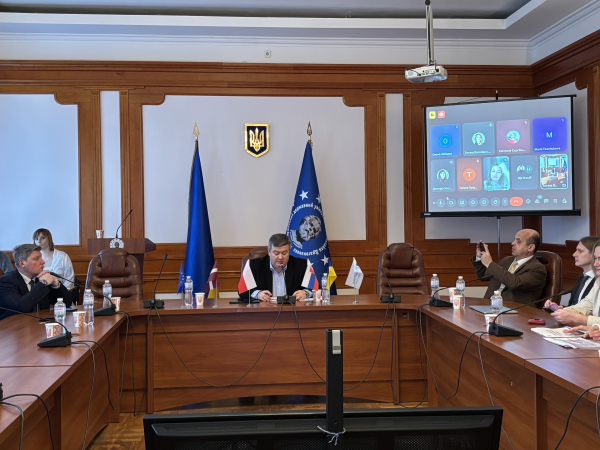
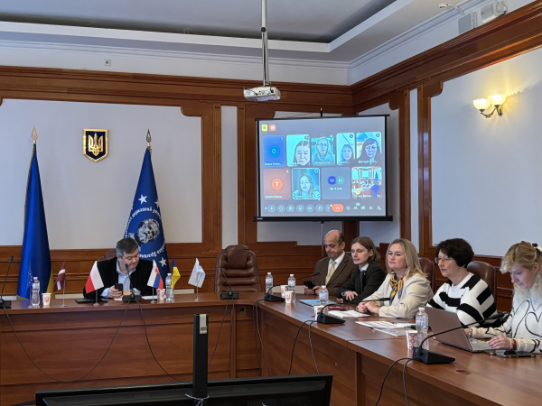
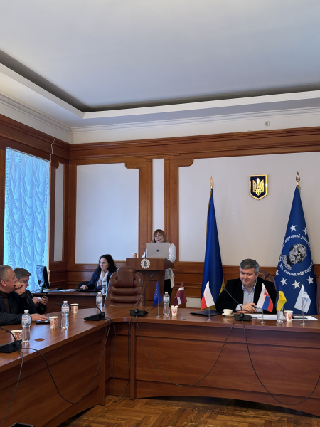
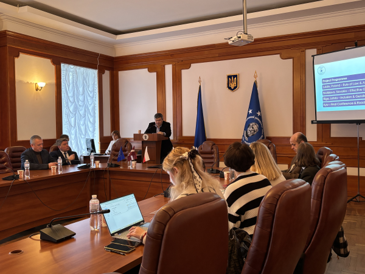
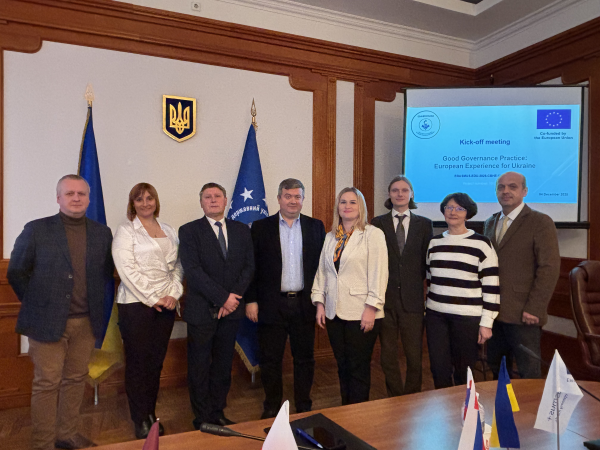

СТАРТ ПРОЄКТУ ERASMUS+ CBHE «Практика належного врядування: Європейський досвід для України»
4 грудня 2025 року відбулася стартова зустріч нового проєкту Erasmus+ CBHE «Good Governance Practice : European Experience for Ukraine» (101237607 – EG4HDCEEU4UI – ERASMUS-EDU-2025-CBHE) «Практика належного врядування: Європейський досвід для України», координатором/грантхолдером якого є Український державний університет імені Михайла Драгоманова.



Партнерами-членами проєктного консорціуму є Київський столичний університет імені Бориса Грінченка, Карпатський національний університет імені Василя Стефаника, Ніжинський державний університет імені Миколи Гоголя, Криворізький національний університет, Бердянський державний педагогічний університет, Інститут політичних і етнонаціональних досліджень ім. І.Ф. Кураса, Балтійська міжнародна академія (Латвія), Економічний університет у Братиславі (Словаччина), Університет Марії Кюрі-Склодовської (Польща).

Реалізація проєкту Erasmus+ спрямована на впровадження європейських підходів до належного врядування, розвиток інституційної спроможності та обмін кращими практиками, що сприятимуть модернізації управлінських процесів і сталому розвитку України. Стартова зустріч проєкту стала важливим етапом для визначення пріоритетних напрямів діяльності, узгодження підходів до реалізації запланованих заходів та налагодження ефективної співпраці між партнерами. Проєкт відкриває широкі можливості для міжнародного партнерства, академічної мобільності та впровадження європейського досвіду, що матиме позитивний вплив на розвиток управлінських і освітніх практик в Україні.
